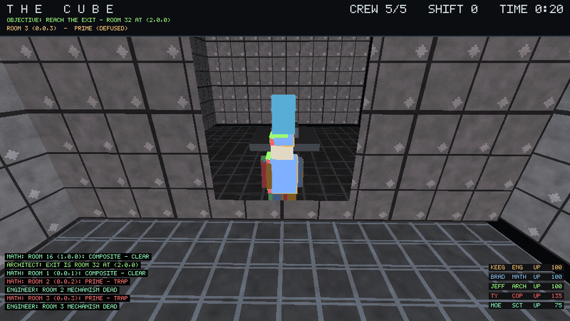
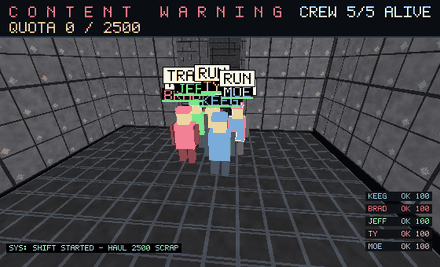
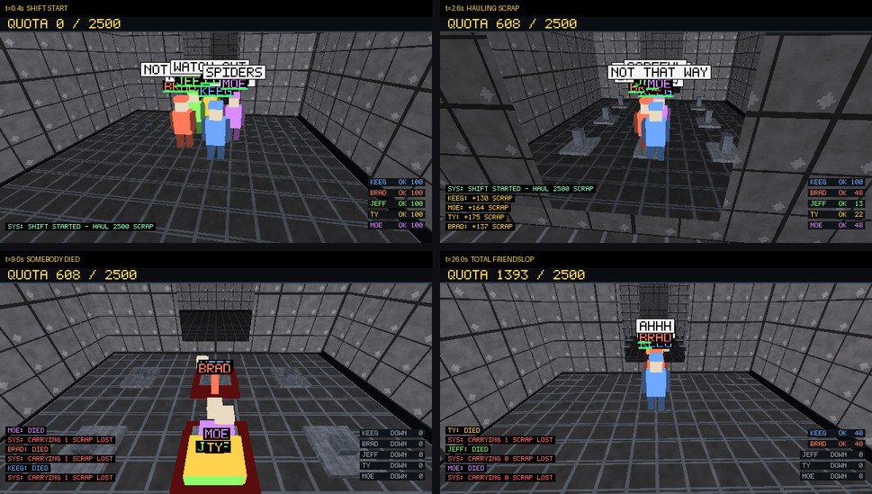
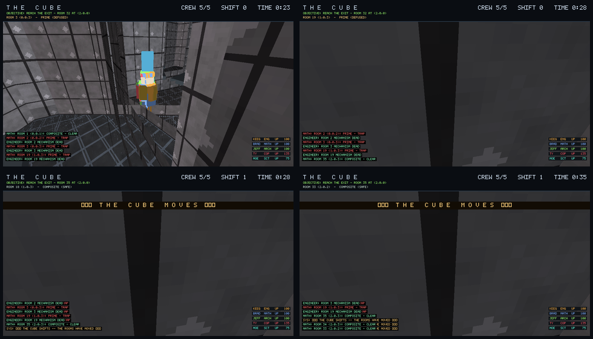

A from-scratch, software-rendered first-person Cube clone. A crew of AI specialists shares one shift-locker of moving rooms, reads the numbers, defuses what they can, forces what they can't — and reaches the exit together. No engine. No GL. No assets. One C++17 binary, hand-rolled rasterizer.
The same C++ simulation, compiled to WebAssembly. It plays itself — an AI crew runs a full shift: navigating, reading room codes, disarming traps, reviving the fallen, and trying to outlast the lattice when it slides. Watch, or take the controls.
Tip: bump the speed to 4× to watch a full run in seconds — the first reconfiguration lands around the 30-second mark.
Every room carries a three-digit code, and a prime code means trapped. But the numbers aren't printed in your room — someone has to read them, and the only people who can are the specialists. Nobody in this Cube is self-sufficient.
7 (prime → deadly) a moment ago may now hold 8 (composite → safe) — and every
number the crew memorised is worthless. The map is wiped; they re-read and re-route from scratch.
Skills are hard-gated: each specialist is the only way to do their thing. A bad crew composition is survivable but brutal, and the loading log tells you exactly what you're missing.
| Class | Colour | The only thing they can do |
|---|---|---|
| ENG | amber | Defuse a primed room's trap mechanism. |
| MATH | blue | Read a room's code and call it clean or primed. |
| ARCH | green | Sense which room is the exit. |
| COP | red | Force welded-shut doors. |
| SCT | cyan | Fastest legs — first through the hatch. |
| SAV | violet | Fast reads, but 20% wrong. |
Difficulty, measured across 30 seeded runs: solo 16/30 · 2 crew 20/30 · 3 crew 27/30 · 4–5 crew 30/30. Working together literally keeps you alive.



Just a C++17 compiler. No SDL, no OpenGL, no engine, no assets — the rasterizer, textures and bitmap font are all in-repo.
git clone https://github.com/moai-heads/friendslop
cd friendslop
make # -> ./cube
# first-person explorer
./cube --seed 3
# the friendslop co-op mode
./cube --coop --seed 8 --crew 5 --shot 26Renders one frame to PPM by default; --seq emits an animation sequence.
CUBE_NOSHIFT=1 freezes the Cube; CUBE_DEBUG=1 dumps telemetry.
src/raster.* — z-buffered, textured, lit triangle rasterizer with alpha-tested surfaces.src/tex.* — procedural textures: concrete, hazard stripe, grid floor, brushed metal…src/world.* — the room lattice, collision, doors, seven trap types, and the room-sliding reconfiguration.src/players.* — the crew: BFS nav, goal picking, quota loop, chatter, ragdolls, revive rescue-bias, HUD.web/web.cpp — a thin Emscripten shim exposing the sim to the browser.~2,700 lines of hand-written C++. The WASM build you're looking at is the same code path as the native binary.